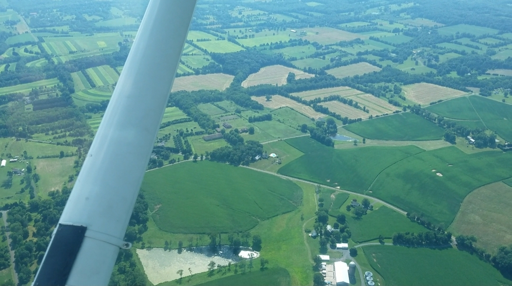

Getting Over My Fear of Flying
I've had a fear of flying for as long as I can remember. Perhaps it was a phobia. The fear wasn't proportional to the danger. I've avoided vacations and family visits because of the terror I felt about flying. This is something that I'm still ashamed of.
A month ago my girlfriend ignored my fear and bought us tickets on a 6 hour flight. This got under my skin. The fear and shame kept creeping into my head. The panic I thought I would inevitably feel when I had to board. That's no way to live. Beating yourself up for being afraid of something. It just feeds the irrational fear.
After reminding myself many times that death is inevitable and that it's better to experience things while alive than not at all I decided that I needed to just expose myself to the fear. Since I can't afford a psychologist I read up on the psychology of the fear of flying. From this I deduced that the best way to get over the fear was to just do it.
The easiest way for me was to try it on a small scale. I paid $100 to ride in a two person plane. The smaller the plane, the worse the turbulence, and the turbulence was bad! Here's the thing though. I thought that if I get the worst of it right away then I can get used to it faster. Everyone in my family said they'd rather fly in a commercial plane than the little thing I was in. Well, go small or go home.
As the plane came up the run way for take off I was filled with panic and wanted to beg the pilot to take us back. Thinking I'll pay the fee but just take us back. Instead of freaking out I kept my composure and repeated to myself that "All the strange sensations of flying are just sensations. Nothing more. This is safe. This guy has been flying for 50 years. This is safe."
 We ended up only going 2500 feet up. Climbing higher wasn't an option because the winds were so bad. The whole time the plane bobbed up and down like a boogie board on the waves. While the turbulence was bad the sights made up for it. All the perfectly laid out fields. The cars, buildings, lakes that resembled a miniature toy world. Very cool.
After the 30 minute ride we landed and I thanked the pilot. We didn't shake hands because we were both drenched in sweat (it was 98 °F out) and because Covid-19 precautions are still in effect. I don't feel as afraid of flying as I used to. A little apprehension and annoyance at the thought but not the gut wrenching-phobic kind of fear.
The next step is to get on a real commercial flight. I'm planning to take a 2 hour flight somewhere in the country. One of the things I've read is that the destination should be to somewhere you'd really like to see. It's a way of rewarding yourself for working through the fear. I'll try to pick somewhere with a lot of wilderness.
I don't know if what I did will work for anybody else. I can't recommend it. I can recommend a book about the fear of flying. It's The Easy Way to Enjoy Flying by Allen Carr and it definitely helped. What also helped was rehearsing the event in my head. Watching youtube videos of full flights. Knowing what to expect takes out any surprises which might knock away your calm and focus.